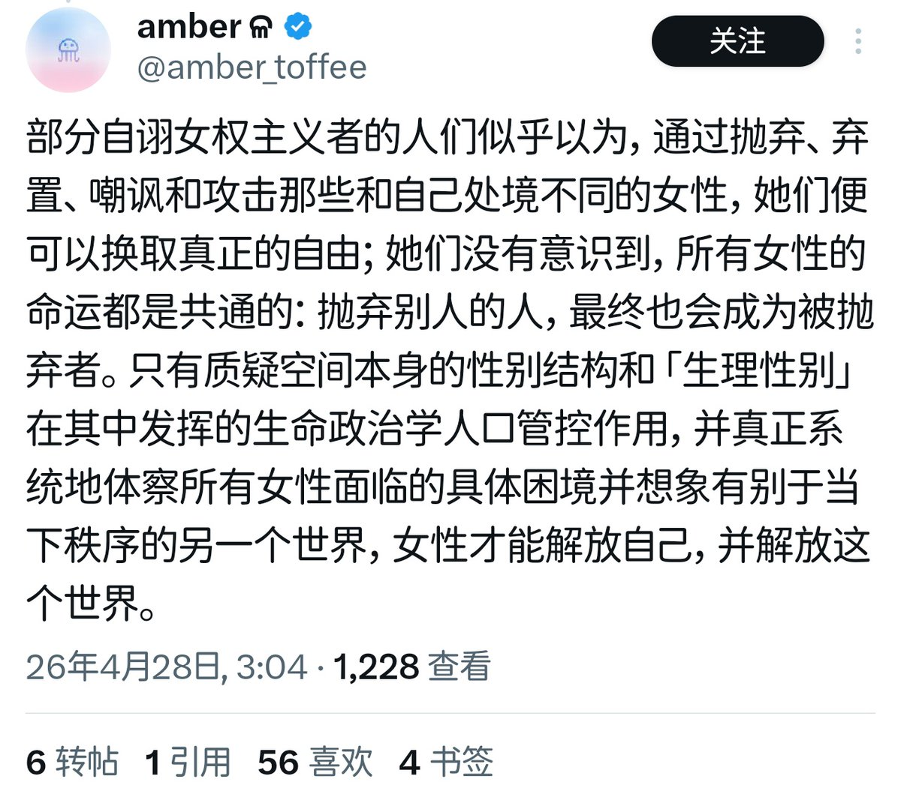

La Peau Trahie: Vieillesse, Toucher et l'Impensé de la Sororité Radicale，引入 Luce Irigaray 后期关于 “呼吸与共处” 的论述，以及 Michel Serres 的 “混杂体”。
激进女权虽然反对父权制的 “视觉中心主义” （男性凝视），但它自己建立了一套 “触觉中心主义的等级制” 。它只认可 “生成性的触摸” （性爱的、生产的、反抗的），而否定了 “维持性的触摸” （给老人翻身、擦口水、感知骨质疏松的微痛）。
激进女权实际上是有意识的将女性处境从 “被忽视的痛苦” 推进到 “结构性的不可能”。
结合 Julia Kristeva 的 “卑贱” 与 Giorgio Agamben 的 “见证”，激进女权通常认为，老妪的身体是 “女性气质的卑贱物” （abject）。激进女权主义呼喊“姐妹情谊”，但姐妹是会一起变老的。恐惧老妪，就是恐惧那个不再能通过“成为激进主体”来逃脱父权定义的不可能的自己，以及，随着效果历史意识的前认知模式的免疫范式的转移，而老妪失去了传统辩证政治学的生命性被感知，ta们是否会必然成为政治生命学的剩余？

激进女权虽然反对父权制的 “视觉中心主义” （男性凝视），但它自己建立了一套 “触觉中心主义的等级制” 。它只认可 “生成性的触摸” （性爱的、生产的、反抗的），而否定了 “维持性的触摸” （给老人翻身、擦口水、感知骨质疏松的微痛）。
激进女权实际上是有意识的将女性处境从 “被忽视的痛苦” 推进到 “结构性的不可能”。
结合 Julia Kristeva 的 “卑贱” 与 Giorgio Agamben 的 “见证”，激进女权通常认为，老妪的身体是 “女性气质的卑贱物” （abject）。激进女权主义呼喊“姐妹情谊”，但姐妹是会一起变老的。恐惧老妪，就是恐惧那个不再能通过“成为激进主体”来逃脱父权定义的不可能的自己，以及，随着效果历史意识的前认知模式的免疫范式的转移，而老妪失去了传统辩证政治学的生命性被感知，ta们是否会必然成为政治生命学的剩余？

《La Peau Trahie: Vieillesse, Toucher et l'Impensé de la Sororité Radicale》引入 Luce Irigaray 后期关于 “呼吸与共处” 的论述，以及 Michel Serres 的 “混杂体”。
激进女权虽然反对父权制的 “视觉中心主义” （男性凝视），但它自己建立了一套 “触觉中心主义的等级制” 。它只认可 “生成性的触摸” https://t.co/dh9ElKE9v8
激进女权虽然反对父权制的 “视觉中心主义” （男性凝视），但它自己建立了一套 “触觉中心主义的等级制” 。它只认可 “生成性的触摸” https://t.co/dh9ElKE9v8